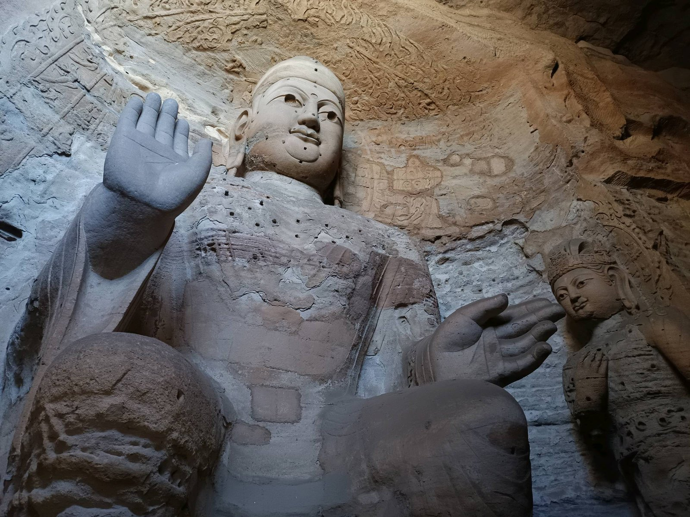
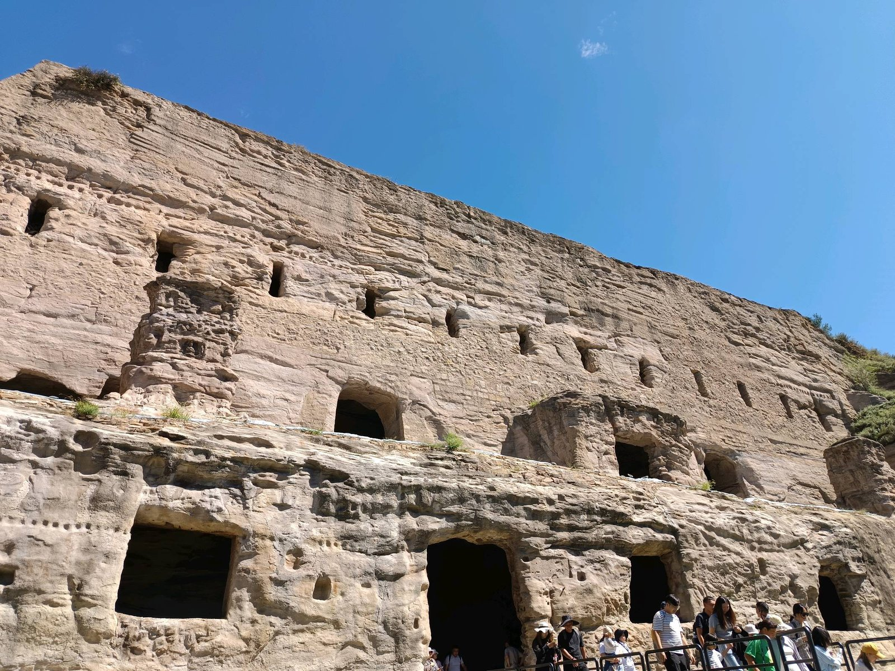
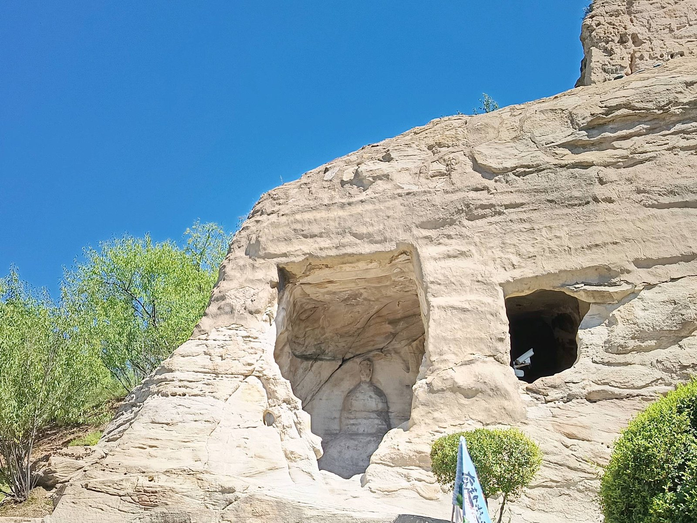
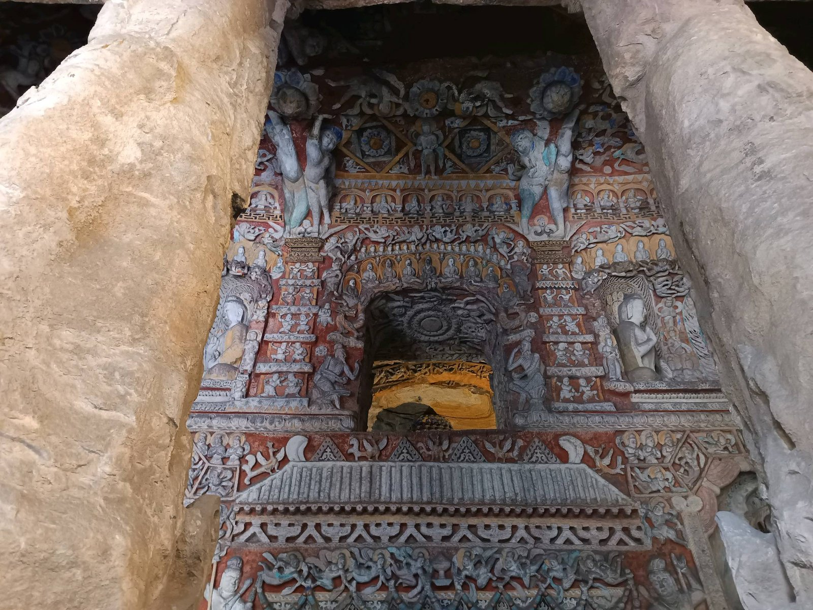
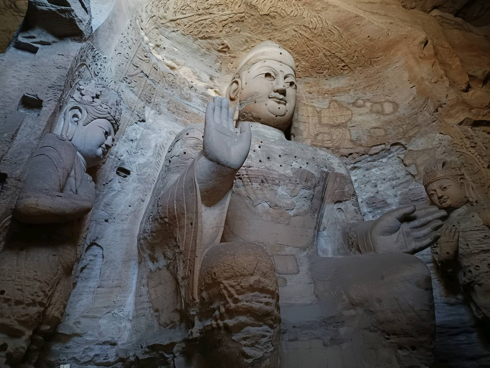

有人问我，为什么一个人来大同。
我说，佛像等了一千五百年，不差我一个人；
而一个不必向任何人解释的下午，我等了很久。
第三窟，灵岩寺洞，云冈最大的洞窟。主佛高约十米，趺坐在幽暗深处，右手施无畏印。我仰着头，脖子酸了也没舍得低下来。
一个人旅行的坏处，是没人帮你按快门；好处是——你干脆放弃了拍照，改用眼睛看。十米的慈悲面前，取景框是个笑话。

仰拍到最后，敬畏是脖子发酸·Cave 3
两侧的胁侍菩萨头戴宝冠，身姿微侧，像随时会走下莲座。灯光斜斜掠过砂岩，一千五百年的风把石头摸得温润，佛的衣纹便像水一样，从肩头流到脚边。
走出洞窟，阳光很盛。整面武周山南崖像一座巨大的蜂巢——洞窟层层叠叠，栈道在崖壁上折出细线，人走在上面，小得像一个标点。

把手机举过头顶，蓝天自己会构图·the cliff
身旁是一对对合影的游客。我拍完就走，没人催，也没人等。孤独在这一刻不是形容词，是特权。

洞口盛着整片天空，像一只石头的眼睛·cave & sky
最后一面墙前，我站了很久。
伎乐天手持琵琶、横笛、排箫，衣带当风，层层叠叠挤在佛龛四周。北魏的工匠在坚硬的砂岩上，凿出了一场无声的演奏——没有指挥，没有听众，一凿就是几十年。

一千五百年前的旋律，至今没有停·the musicians
色彩褪得差不多了，只在凹处剩一点朱红与石青。凑近看是工艺，退后看是艺术；一千五百年后，一个独行的人站在墙前，忽然听见了。
离开前，我又回了一次第三窟。十米的慈悲看了两遍——第一遍看佛，第二遍看自己。

主尊与胁侍，一坐千年·Cave 3, wider
日头偏西，崖壁被染成蜜糖色。五万尊造像，大半残缺：缺头的，断手的，坍成一堆的。云冈从不假装完美。它只是平静地陈列一个事实——时间从不留情，但总有人想在石头上留下点什么。
比如北魏的匠人。
比如今天，按下六次快门的我。
一个人来，一个人走——不孤独，是自由。